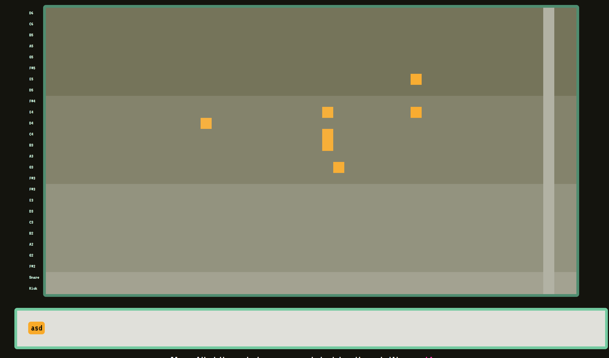
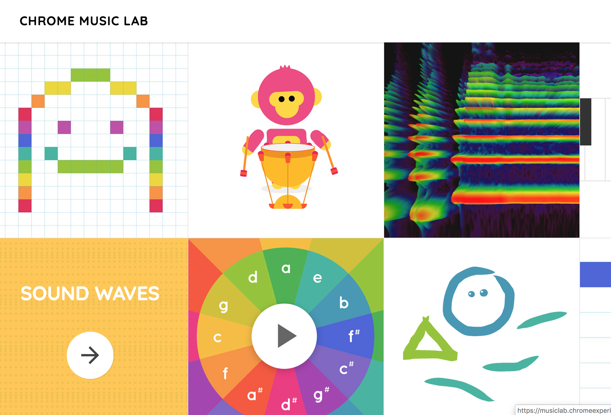
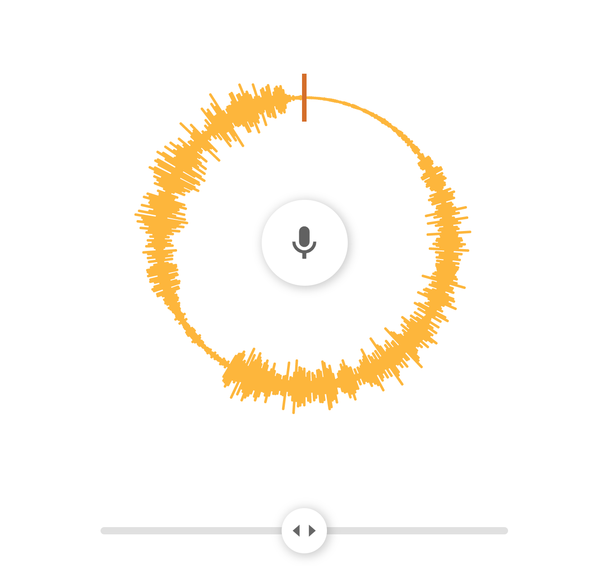
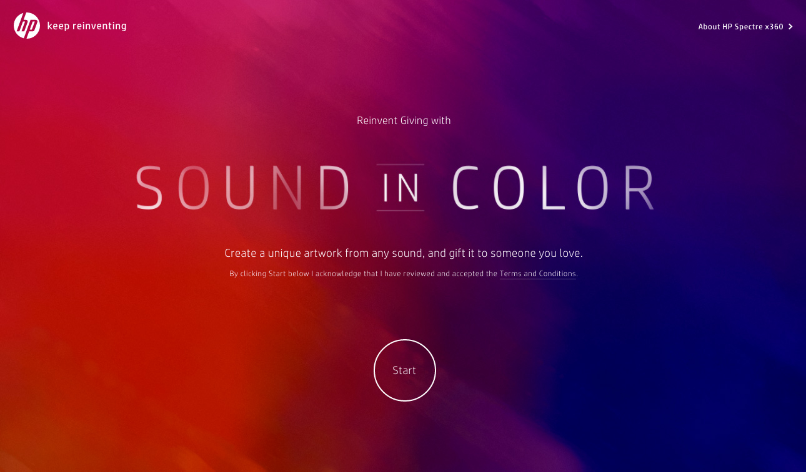

This week - Sound
For interaction design, have been exploring sound in
digital spaces. Don't really know much about digital sound, so its a cool change to
learn about it. Specifically chrome music lab has a lot of cool projects around interactive
sound pieces.
Sol Lewitt : Sentences on Conceptual Art
- Conceptual artists are mystics rather than rationalists. They leap to conclusions that logic cannot reach.
- Rational judgements repeat rational judgements.
...

Game
Blog
Really cool multiplayer experience for creating 8bit music.
Played with Gen and Quinn and can be really fun with multiple people.

Site

Spinner

Site
Visualizing Audio as a painting.
Back Home